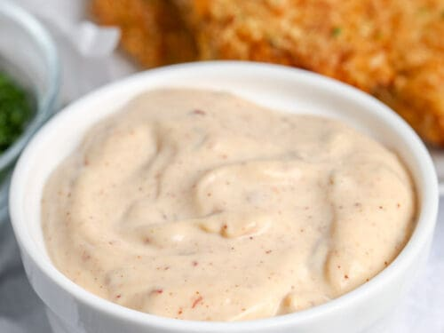

BRCR Secret Sauce Recipe

Description
Ever wanted to know how to make Bird Rock's special sauce they use with their breakfast sandwich? Well look no further because I have all the secrets! This recipe is made for a bulk kitch setting but it can easily be downscaled if you keep the ratios consistent.
Ingredients
- 840g mayonnaise
- 240g honey dijon mustard
- 40g dijon
- 1 full bottle of cholula, or about 150g
Steps
- Using a kitchen scale, grab a large enough mixing bowl, tare out your scale, and weigh out the mayo
- Tare your scale once more and add the honey dijon mustard
- Tare your scale again and add the dijon
- Finally, add your cholula
- Mix by hand until the sauce seems to become consistent. You can finish here or, as an additional step, use an immersion blender to make it extra smooth